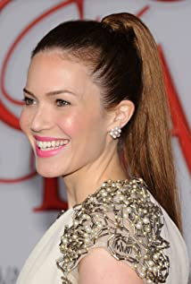

| Photo | Name | As | About |
|---|---|---|---|
| Milo Ventimiglia | Jack Pearson | Milo currently stars on the critically acclaimed drama series "This is Us." He has been nominated twice for an Emmy Award for Outstanding Lead Actor in a Drama Series (2017 & 2018) and a Critic's Choice Award for Best Actor in a Drama Series (2019) for his portrayal of the family patriarch, Jack Pearson. | |
|  | Mandy Moore | Rebecca Pearson | Amanda Leigh Moore was born in Nashua, New Hampshire, on April 10, 1984, to Stacy (Friedman), a former news reporter, and Don Moore, an airline pilot. During her childhood, her family moved to Orlando, Florida, where she was raised. She has Russian Jewish (from her maternal grandfather), English, Scottish, and Irish, ancestry. |
| Sterling K. Brown | Randall Pearson | Emmy Award-winning actor Sterling K. Brown stars in NBC's Emmy and Golden Globe nominated drama series THIS IS US. For his role as Randall Pearson, Brown won an Emmy Award for Outstanding Lead Actor in a Drama Series, as well as a Golden Globe, becoming the first African American actor to win his category in the award show's 75-year history. | |
| Chrissy Metz | Kate Pearson | Chrissy Metz was born on September 29, 1980 in Florida, USA as Christine Michelle Metz. She is an actress, known for This Is Us (2016), Breakthrough (2019) and Sierra Burgess Is a Loser (2018). She was previously married to Martyn Eaden. | |
| Justin Hartley | Kevin Pearson | ustin Hartley can currently be seen starring on NBC's critically acclaimed, award winning series, "This Is Us," alongside Mandy Moore, Milo Ventimiglia, Sterling K. Brown and Chrissy Metz. Created by Dan Fogelman, "This Is Us" premiered in September 2016 and instantly broke ratings records, earning the freshman series an immediate two-season renewal, with season three set to premiere on September 25, 2018 | |
| Susan Kelechi Watson | Beth Pearson | Susan Kelechi Watson was born on November 11, 1981 in Brooklyn, New York, USA. She is an actress and producer, known for This Is Us (2016), A Beautiful Day in the Neighborhood (2019) and NCIS: Naval Criminal Investigative Service (2003). |